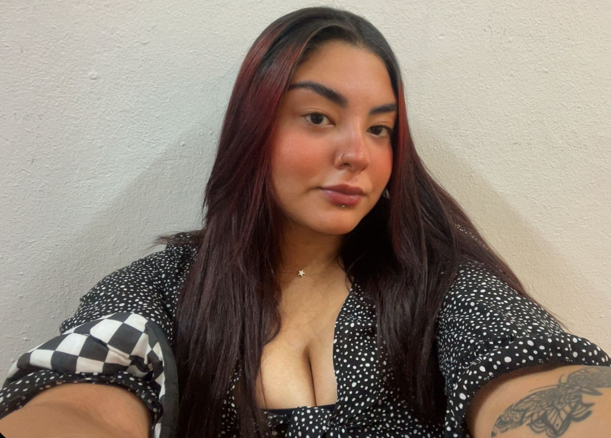

<!DOCTYPE html>
<html lang="pt-BR">
<head>
    <meta charset="UTF-8">
    <meta name="viewport" content="width=device-width, initial-scale=1.0">

        <title>Meu Currículo</title>
        <link rel="preconnect" href="https://fonts.googleapis.com">
        <link rel="preconnect" href="https://fonts.gstatic.com" crossorigin>
        <link href="https://fonts.googleapis.com/css2?family=Montserrat:ital,wght@0,100..900;1,100..900&family=Source+Code+Pro:ital,wght@0,200..900;1,200..900&display=swap" rel="stylesheet">
        <link rel="stylesheet" href="style.css">
</head>
<body>
    <!--CONTÉUDO DO CURRICULO-->
</body>
</html>

<nav>
    <div class="menu">
        <a href="#apresentação">Apresentação</a>
        <a href="#educação">Educação</a>
        <a href="#certificações">Certificações</a>
        <a href="#experiência">Experiência</a>
        <a href="#habilidades">Habilidades</a>
    </div>
</nav>

<header id="apresentação">
    <h1>Maria Eduarda Moura Carvalho</h1>
    
    <p>maducodes@gmail.com | Ouro Preto, MG</p>
    <p> Tenho 24 anos e sou estudante de Ciência da Computação na UFOP. 
        Minha trajetória profissional começou como professora de inglês em escolas, mas minha paixão pela programação surgiu quando precisei substituir um professor da área.
        A partir disso, mergulhei no desenvolvimento de software, iniciando meus estudos no curso de desenvolvimento full stack do Projeto Desenvolve, oferecido pela minha cidade natal, Itabira. Essa experiência consolidou minha decisão de ingressar na Ciência da Computação.
        Hoje, consigo alinhar minhas habilidades em inglês, adquiridas na minha carreira anterior, com minha trajetória atual na tecnologia, o que me permite comunicar conceitos técnicos com clareza e colaborar em projetos internacionais.
    </p>
</header>

<section id="educação">
    <div class="tituloeducacao"><h2>Educação</h2></div>
    <div>

        <h3>Universidade Federal de Ouro Preto (UFOP) - Morro do Cruzeiro, Ouro Preto MG.</h3>
        <p>Ciência da Computação</p>
        <p>Ínicio: 2024 | Previsão de Conclusão: 2028</p>

    </div>

    <div>

        <h3>Projeto Desenvolve Itabira</h3>
        <p>Dev FullStack</p>
        <p>ínicio: 2023 | Previsão de Conclusão: 2025</p>
    </div>
</section>

<section id="certificações">
    <h2>Certificações</h2>

    <div>
        <p><strong>Língua Inglesa - Nível B2</strong></p>
        <p>CCAA, Bruna Stzoka, Rosetta Stone</p>
    </div>

    <div>
        <p><strong>Scratch</strong></p>
        <p>Carga Horária: 20 horas </p>
        <p>Ano de Realização: 2024</p>
    </div>

    <div>
        <p><strong>No Code</strong></p>
        <p>Carga Horária: 40 horas </p>
        <p>Ano de Realização: 2025</p>
    </div>
    <div>
        <p><strong>Introdução Web</strong></p>
        <p>Carga Horária: 40 horas </p>
        <p>Ano de Realização: 2025</p>
    </div>
</section>

<section id="experiência">
    <h2>Experiência Profissional</h2>
    <div>
        <h3>Professora de Inglês</h3>
        <p>Colégio CESE | CNA Curso de Idiomas</p>
        <p>Período de Emprego: 2022 - 2023</p>
        <p>Como professora de inglês em cursinhos e colégios, fui responsável por planejar e ministrar aulas para diferentes níveis, criando materiais didáticos e utilizando recursos tecnológicos para tornar o aprendizado mais dinâmico. 
            Minha abordagem interativa e personalizada contribuiu para a melhora no desempenho dos estudantes e foi reconhecida pela coordenação e pelos próprios alunos.</p>
    </div>

    <div>
        <h3>Teacher Assistant</h3>
        <p>Maple Bear Canadian School</p>
        <p>Período de Emprego: 2021 - 2022</p>
        <p>Como assistente de professora em uma escola bilíngue multinacional, atuei no suporte ao planejamento e execução de aulas em inglês, auxiliando alunos no processo de aprendizagem.
            Também colaborei na adaptação de materiais didáticos, no acompanhamento do desempenho dos estudantes e na organização de atividades interativas. Minha experiência nesse ambiente multicultural aprimorou minhas habilidades de comunicação e colaboração em contextos internacionais.</p>       
    </div>
</section>

<section id="habilidades">
    <h2>Habilidades Técnicas</h2>
    <ul>
        <li>Línguagens de Programação: C, Python.</li>
        <li>Desenvolvimento No-Code: Bubble, Flutterflow.</li>
        <li>Ferramentas e Tecnologias: GitHub, Figma, Firebase.</li>
        <li>Frontend: HTML, CSS.</li>
    </ul>

</section>

<footer>
    <u1>
        <li><a href="https://br.linkedin.com/in/maria-eduarda-moura-carvalho-36ab92278"> LinkedIn</a></li>
        <li><a href="https://github.com/dudamcarv">GitHub</a></li>
    </u1>
    <p>&copy; 2025 Maria Eduarda. Todos os direitos reservados.</p>
</footer>
